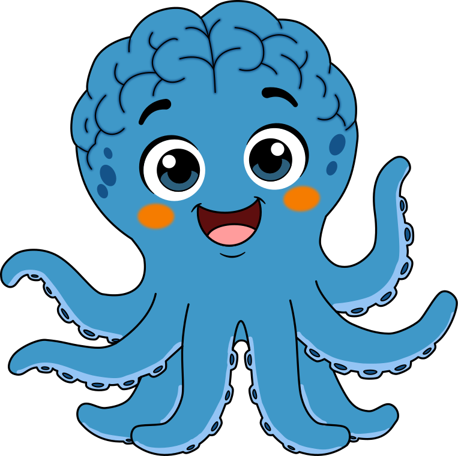
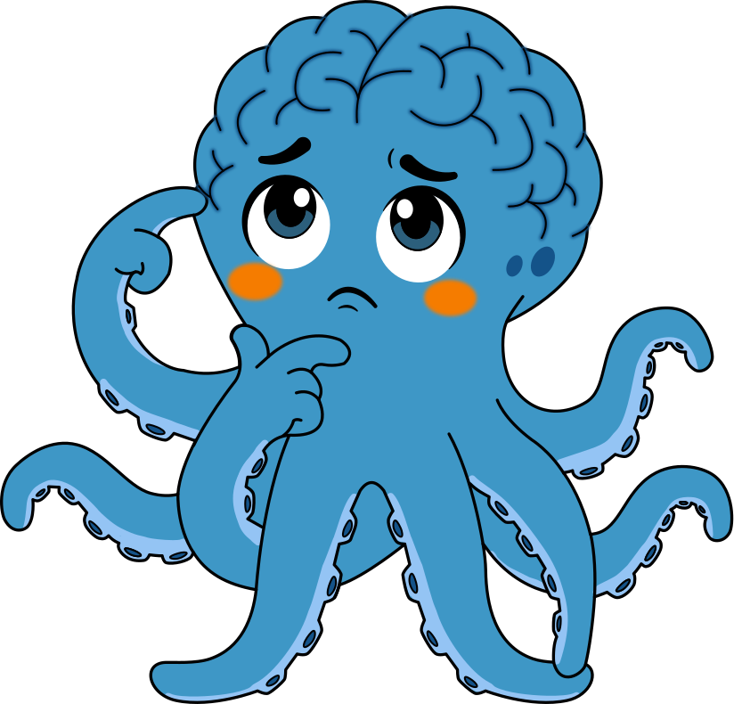
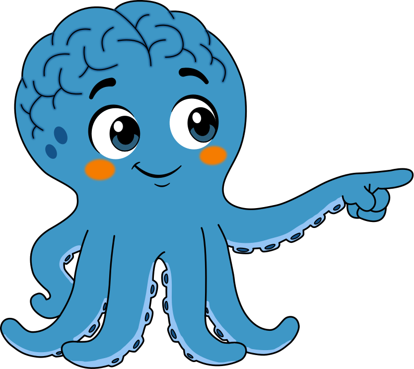
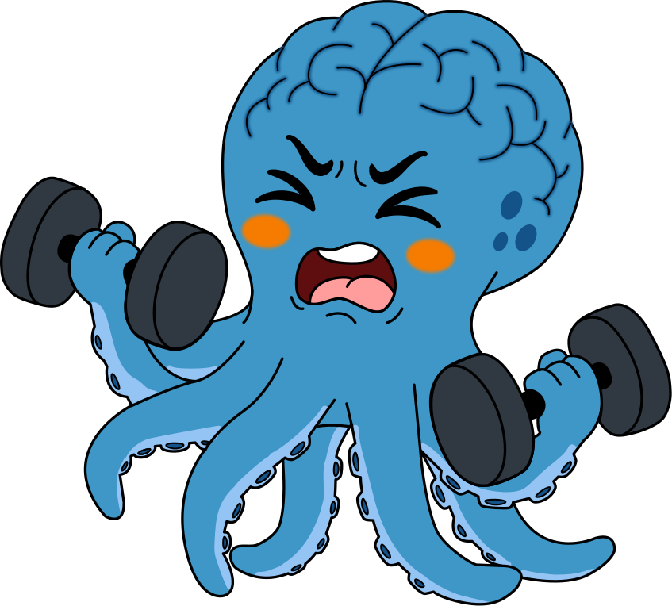
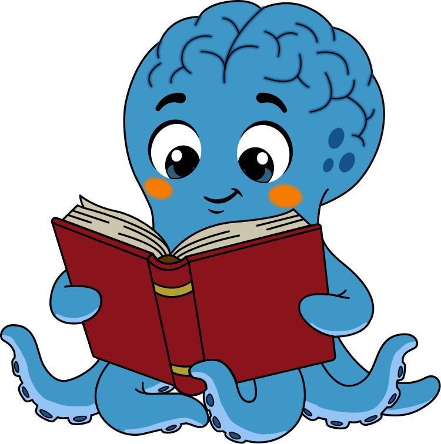
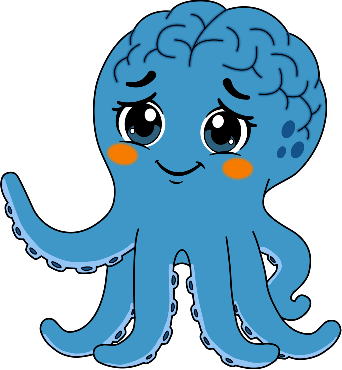
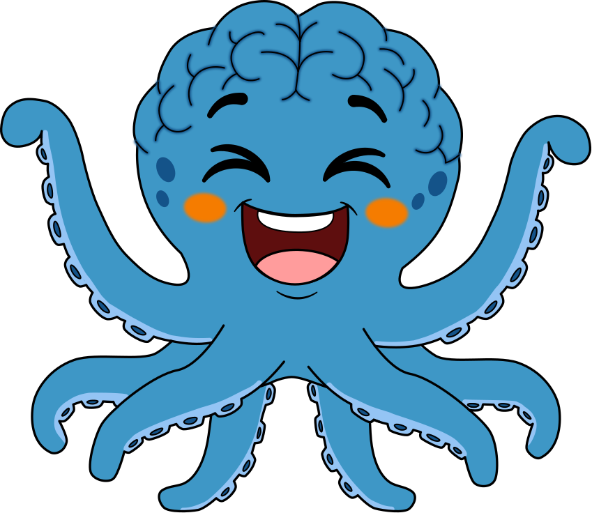

GIMNASIO DEL CEREBROInglés · Phonics · Blending CVC
Material del facilitador
Let's Make Words!
Sesión 1 · Blending CVC · 6 años · 60 minutos · Imprimir en A4

| Pág. | Material | Cómo prepararlo |
|---|
| 2 y 3 | Letter cards (18) | Imprime en cartulina y recorta. Vocales en naranja, consonantes en azul. |
| 4 | Picture cards (8) | Recorta. Para Robot Talk. La palabra pequeña de la esquina es solo para ti. |
| 5 | Sound boxes | Plastifica o mete en funda. Pon una letra encima de cada caja. |
| 6 | Hoja del facilitador | Cadena de palabras, listas por actividad y frases de apoyo. No se recorta. |
| 7 | Monster | Pega en una caja de zapatos o de pañuelos y recorta la boca por la línea punteada. |
| 8 | Word cards (12) | Recorta. Para Feed the Monster. |
| 9 y 10 | Quick Check | La 9 la lee el estudiante. En la 10 anotas los resultados. |
| 11 | My First Sentence | El estudiante lee la oración y dibuja. |
| 12 | Certificado | Entrégalo en el cierre. Los círculos son para stickers de las próximas clases. |
Ruta de la sesión
1 0 a 5 Sound Flash 2 5 a 12 Robot Talk 3 12 a 20 I Do 4 20 a 32 Word Chains
5 32 a 37 Jump and Blend 6 37 a 48 Feed the Monster 7 48 a 54 Quick Check 8 54 a 60 Cierre
Recordatorios clave
- Di sonidos limpios, sin agregar "uh": /m/ es "mmm", /b/ es un golpe corto, no "buh".
- Empieza con palabras que inician en sonidos que se alargan (m, s, f, n) antes que b, d, t, p, c.
- Si el estudiante se cansa o se frustra, cierra antes con un éxito. No fuerces los 60 minutos.
Gimnasio del Cerebro · Rionegro, Antioquia01
GIMNASIO DEL CEREBROLetter cards · 1 de 2
Sound Flash · I Do · Word Chains
Letter Cards
Recorta por la línea punteada.
Gimnasio del Cerebro · Let's Make Words!02
GIMNASIO DEL CEREBROLetter cards · 2 de 2
Sound Flash · I Do · Word Chains
Letter Cards
Vocales en naranja. Incluye una "a", una "i" y una "t" extra para armar palabras.
Gimnasio del Cerebro · Let's Make Words!03
GIMNASIO DEL CEREBRORobot Talk
Oral blending · sin letras
Picture Cards · Robot Talk
"I am a robot. /s/ /u/ /n/... What word is it?" el estudiante señala la imagen.

☀️sun
🗺️map
fan
🐈cat
🐖pig
🛏️bed
Gimnasio del Cerebro · Let's Make Words!04
GIMNASIO DEL CEREBROI Do · We Do
Modelado y práctica guiada
Sound Boxes
Pon una letra en cada caja. Toca cada punto y di el sonido. Desliza el dedo por la flecha y di la palabra.
tap · tap · tap · slide!

Arm tapping: 1er sonido en el hombro, 2º en el codo, 3º en la muñeca. Luego desliza la mano por todo el brazo diciendo la palabra.
Gimnasio del Cerebro · Let's Make Words!05
GIMNASIO DEL CEREBROHoja del facilitador
We Do · 20 a 32 min
Word Chains
Cambia una sola letra cada vez (en naranja). Tú mueves las fichas y el estudiante lee. A la mitad, cambien los papeles.
sat → mat →
map → cap →
can → fan →
fin → pin →
pit → sit
I Do (modelado): sat, mat, man, map, nap, Sam
"Watch me. /s/ /a/ /t/... sssaaat... sat!"
Robot Talk (oral, sin letras): sun, map, fan, mop, sit, cat, pig, bed
Después el estudiante es el robot y tú adivinas.
Jump and Blend (pausa activa): pig, sun, hop, bed, cup, red, jam, wet
Un salto por sonido y un salto grande al decir la palabra: "/p/ /i/ /g/... PIG!"

Frases de apoyo
- "Show me your super fast sounds!"
- "Tap your arm. Now slide!"
- "Say it fast. What word is it?"
- "Good try! Let's tap it again together."
- "You are a reader now!"
Si se traba: vuelve a oral blending, usa palabras de 2 sonidos (at, in, up, am) o alarga el sonido que no logra soltar: "sss-aaa-t".
Gimnasio del Cerebro · Let's Make Words!06
GIMNASIO DEL CEREBROFeed the Monster
You Do · 37 a 48 min
Feed the Monster!
Pega en una caja y recorta la boca por la línea punteada. "Yum! Yum! I love words!"
✂ Recorta dentro de la línea punteada de la boca
Gimnasio del Cerebro · Let's Make Words!07
GIMNASIO DEL CEREBROFeed the Monster
You Do · 37 a 48 min
Word Cards · Feed the Monster
Si la lee bien, el monstruo se la come. Si no: "Yuck! Try again!"
cat
man
pig
sit
fan
bat
pin
dad
tip
can
nap
big
Gimnasio del Cerebro · Let's Make Words!08
GIMNASIO DEL CEREBROQuick Check · hoja del niño
Evaluación · 48 a 54 min
Can you read these words?
Sin ayuda. Todas las letras van en el mismo color a propósito: aquí ya no hay pistas.

1mat
2sun
3pin
4dog
5fan
6sit
7cap
8bed
9tip
10mop
Gimnasio del Cerebro · Let's Make Words!09
GIMNASIO DEL CEREBROQuick Check · hoja del facilitador
Evaluación
Quick Check · Registro
Alumno: ____________________ Fecha: ____________________ Sesión #: ______
| # | Palabra | ✓ Lee la palabra | Solo dice sonidos sueltos | Error (qué dijo) |
|---|
| 1 | mat | | | |
| 2 | sun | | | |
| 3 | pin | | | |
| 4 | dog | | | |
| 5 | fan | | | |
| 6 | sit | | | |
| 7 | cap | | | |
| 8 | bed | | | |
| 9 | tip | | | |
| 10 | mop | | | |
| Total | ____ / 10 | ____ / 10 | |
Interpretación
- 8 a 10: próxima sesión, CVC con todas las vocales mezcladas.
- 5 a 7: repite con a e i, y más word chains.
- 0 a 4, o dice sonidos sin unirlos: vuelve a oral blending y a palabras de 2 sonidos (at, in, up, am).
- Nota: sun, dog, bed y mop usan vocales que casi no se practicaron. Si las lee, está generalizando.
Observaciones (atención, sonidos que confunde, qué lo motivó)
Gimnasio del Cerebro · Let's Make Words!10
GIMNASIO DEL CEREBROMy First Sentence
Cierre · 54 a 60 min
My First Sentence
Las palabras en naranja son tricky words: las dice el facilitador.

Sam sat on a mat.
Draw Sam on the mat!
Gimnasio del Cerebro · Let's Make Words!11
Gimnasio del Cerebro
I am a reader!
⭐ ⭐ ⭐

I can blend sounds to make words.
name
c + a + t = cat 🐈
One sticker for every class!
Gimnasio del Cerebro · Rionegro, Antioquia12